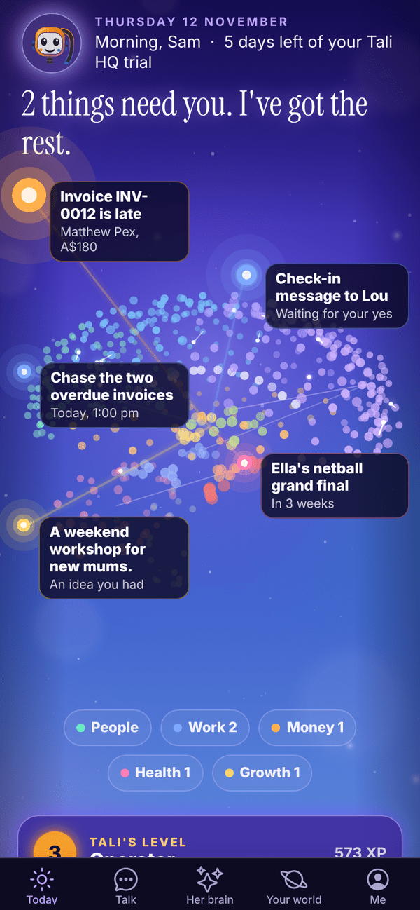
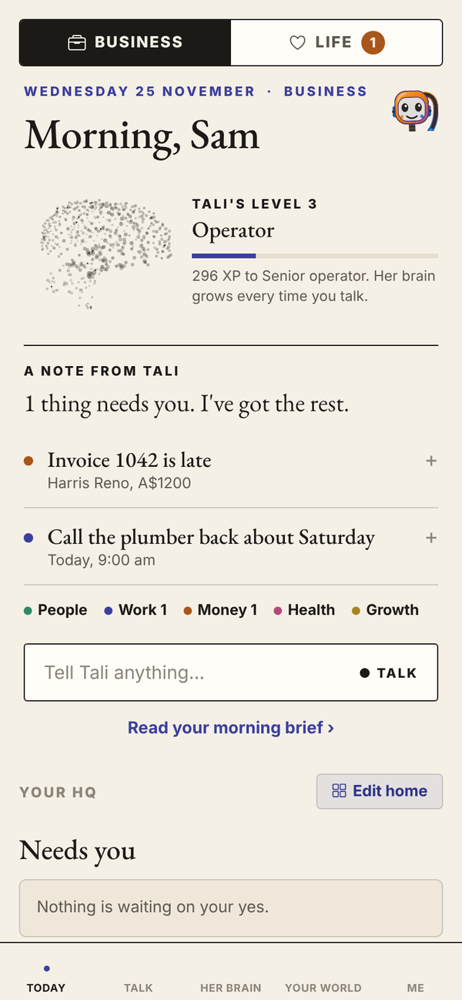
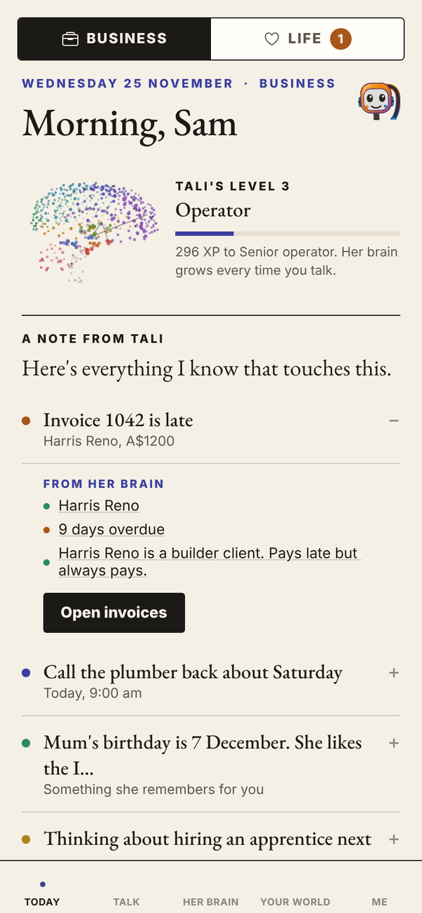
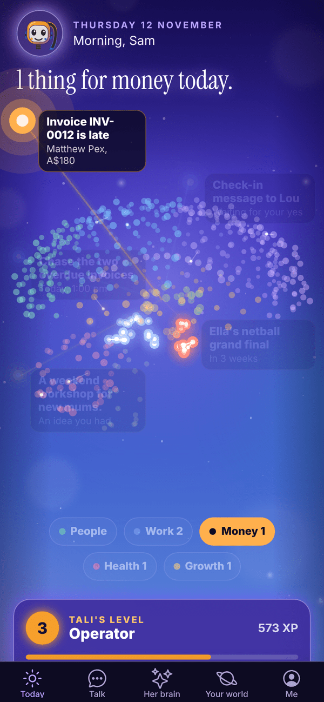
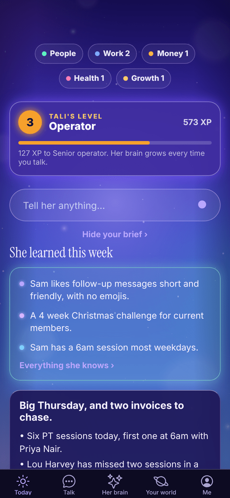
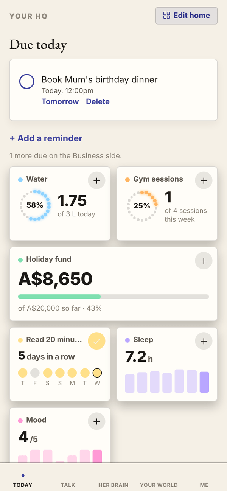
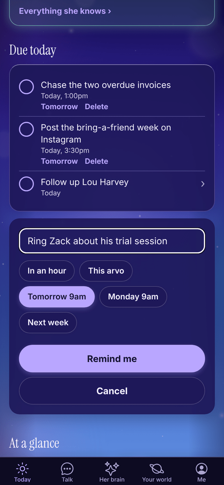

Tali HQ guide
Today and your morning brief
A note from Tali with what needs you, her brain and level, the lens, your morning brief, and your HQ underneath.
Today is the first screen you see. It reads like a page: the date, your greeting, Tali's brain and her level, then A note from Tali with what needs you today. Under that is your morning brief and your HQ, the blocks you choose. Pull down on the screen at any time to refresh it.


The top of the page#
- Business and Life. If you run a business, two tabs sit at the very top. Today follows the side you are on, and the other side shows a small number when something there needs you. See Business and Life. If you don't run a business, there are no tabs and you see everything on one page.
- The date and your greeting. Morning, Afternoon or Evening, with your first name. In the last month of a trial, the number of days you have left shows under it.
- Her brain. A small version of her brain, still turning. Tap it to step inside. See Her brain.
- Tali's level. Her level, its name and a bar to the next one. Her brain grows every time you talk. Tap it to open her brain. See Her brain.
A note from Tali#
Under her brain, Tali sums up your day in one line, like "1 thing needs you. I've got the rest." On the Life side it reads "4 things for you today. Work can wait." When nothing is on, she says "All quiet. Tell me anything."
Under her line is a short list of what she means. Each line has a coloured dot for the part of your life it belongs to.
- On the Business side: an invoice that is late, a draft waiting for your yes, a new email, a reminder due today, a date coming up, or an idea you had.
- On the Life side: a birthday in the next two weeks, how many of your habits are done today, a check up coming, and reminders due today.

Tap + on a line to open it. Tali shows:
- From her brain: up to three things she remembers that touch it, like the client's name or how many days late an invoice is. Tap one to ask her about it in Talk.
- One thing to do, like Open invoices, Open email or Plan it with her. On a reminder it says Your list is just below, because it sits in Due today.
- Done with this on dates and ideas. It takes that one off Today so the next one gets its turn. She still remembers it.
Tap − to close it again.
A thought for today#
If you follow a school in Your philosophy, a short thought from it shows under the list each day. Tap Keep it to save it, Not today to hide it, or More › to read about the school. See Settings and account.
The lens#
Under the list is a row of dots: People, Work, Money, Health and Growth, each with how many things it has today. On the Life side you see People, Health and Growth.

Tap one and Today follows it. The list, Tali's line and the blocks below show only that part of your life, and the matching parts of her brain light up. Tap the same one again to see everything.
Tell Tali anything#
The box under the lens is the quickest way to tell Tali something. Tap it and Talk opens, ready for you to type or talk. With a lens on, it reads "Tell her about health..." and so on.
Your morning brief Tali HQ#
Every morning at the time you pick, Tali writes your brief: what's on your calendar and the free gaps (when connected), emails that need you, reminders and follow-ups due, invoices that are unpaid or late, anything in your business health worth a look, what's waiting for your yes, today's training session if you have a plan, and one nudge. If you run a business, each line is tagged Business or Life.

- Tap Read your morning brief › under the Tell Tali box. It shows once today's brief has landed.
- The brief opens with its headline and the first three lines. Tap Show all to see the rest.
- Tap Got it once you've read it. Hide your brief › folds it away without marking it read.
Pick your brief time in Me, Settings, under Morning brief time: any half hour from 5:30am to 9:00am. Each brief uses 1 credit.
You can also put the brief on your home as its own block. See Your HQ.
She learned this week#
When Tali has kept new memories in the last week, a She learned this week card lists the newest ones. Tap Everything she knows › to open her brain. On the Life side it sits near the top. On the Business side it sits further down.
Your HQ#
Everything under YOUR HQ is yours to arrange: Needs you, Due today, Money, your trackers, a countdown, and more. Each side has its own home. Tap Edit home to add, move, resize or hide anything.

Your HQ has its own page: Your HQ: blocks and trackers. The two blocks most people use every day are below.
Needs you#
Anything Tali has drafted for you, like a message, an email, an invoice or a booking, waits here. Tap a draft to open it, then copy it, send it, ask Tali to rework it, or tap Not needed. Full details are on Approvals.
When an email needs you (forwarded from your Gmail, from Outlook, or sent to Tali's own address on Pro), a card at the top says who it's from. Tap it to open Email. See Gmail and Outlook. Tali HQ
Due today Free#
Reminders and client follow-ups that are due today (or overdue) show here. If you run a business, you see the ones for the side you are on, with a line like "1 more due on the Business side".
- Tap the circle to tick a reminder or follow-up off.
- Under a reminder, tap Tomorrow to move it to 9am tomorrow, or Delete to remove it. Delete asks Sure? first, so tap again to confirm.
- Tap a follow-up to open that person. See Your people and dates.
Add a reminder yourself#

- Tap + Add a reminder under Due today.
- Type what to remind you about, for example "Chase Jordan about his invoice".
- Pick a time: In an hour, This arvo (3pm, or an hour from now if it's already past 3), Tomorrow 9am, Monday 9am or Next week.
- Tap Remind me.
A reminder you add on the Business side belongs to Business, and one you add on the Life side belongs to Life. Adding reminders yourself is free and uses no credits. You can also just tell Tali in Talk: "remind me to call Zack on Friday at 10".
If notifications are on, Tali sends a short notification when a reminder is due.
Further down Today#
Tools and Yours#
On the Business side, a Tools card opens everything for your business in one tap: Jobs and quotes, Pipeline, Bookings, Projects, Invoices, Inbox, Receipts, To do and more. On the Life side, a Yours card shows what's coming up in the next month, like a birthday, a check up or someone you haven't caught up with, plus a link to your own website. See Business tools and Your website.
Business health Tali HQ#
If you run a business, a Business health tile shows "All good" or how many things need a look. Tap it to see them. Tali checks for:
- invoices that are overdue (red once the oldest is more than 14 days late)
- client follow-ups that are overdue (red when there are more than 3)
- active clients with no contact in 2 weeks
- new leads with no follow-up set after 2 days
- drafts waiting for your yes more than 2 days
- reminders overdue by more than a day
Twice a day, once in the morning and once in the evening (Sydney time), if anything is amber or red, Tali sends you one notification about it (at most once every 12 hours).
Meeting nudge Tali HQ#
With a calendar connected, if one of today's events matches a client (their email is on the invite, or their name is in the title), Today shows the meeting with that person, the time, and the top things Tali knows about them.
More from Tali#
The quieter things live in a row of chips near the bottom. Tap one to open it. Each only shows when it has something in it.
- Calendar Tali HQ: today's events and free gaps from your connected Google or Outlook calendar, if Calendar isn't already a block on your home.
- Tali noticed Pro: this month's patterns. See Her brain.
- Decisions Free: your latest decision. See Decisions.
- Earlier notes Free: older briefs, health checks and Friday check-ins. Tap one to read it in full.
In the evening#
On the Life side, a Shut the day down card shows near the bottom from two hours before your shutdown time, with Start.
Once the day is closed, Today goes into Tali's night sky. It shows only her brain, turning slowly, her goodnight line, and two buttons: Sleep sounds and Write in your journal. Your lists come back in the morning. See Shut the day down and night mode.
Questions#
Why don't I see a morning brief?
The daily brief is part of the paid plans (and the trial). It lands at the time set in Settings, so if it's earlier than that, it isn't there yet. On Free you get a Friday check-in instead.
Can I change when my brief arrives?
Yes. Me, Settings, Morning brief time, pick a time, then tap Save.
Does ticking off a reminder cost credits?
No. Reminders, ticking things off and adding reminders yourself never use credits.
What does "This arvo" mean?
3pm today. If it's already past 3pm, it sets the reminder for an hour from now.
I tapped a lens and half of Today disappeared.
That's the lens. Tap the same one again (People, Work, Money, Health or Growth) to see everything.
I tapped Done with this by mistake.
It only takes that idea or date off Today on this device. Tali still remembers it, and you can find it in Her brain or under Dates that matter.
Where did At a glance go?
Money, This week and Goals are blocks on your home now, so you can move or hide them like anything else. Tap Edit home to add them back if you took them off. See Your HQ.
A reminder I added isn't showing.
Check the other side. A reminder belongs to the side you added it on, and Due today says how many more are due on the other side.
How do I get rid of a reminder I don't need?
Tap Delete under it, then tap again when it says Sure?.